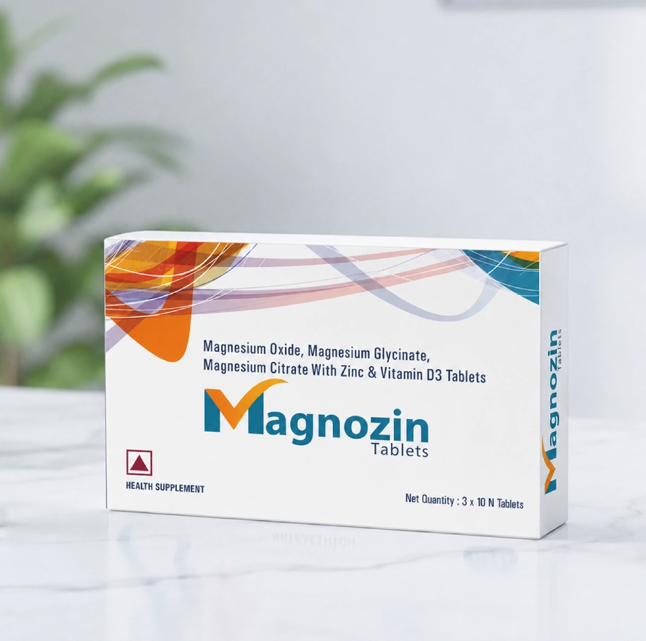
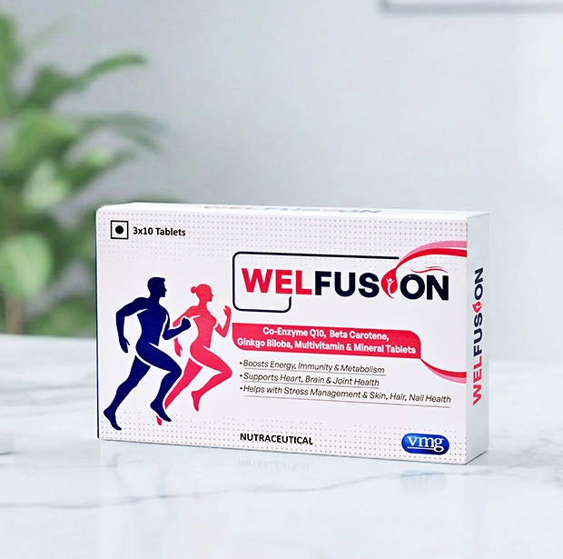
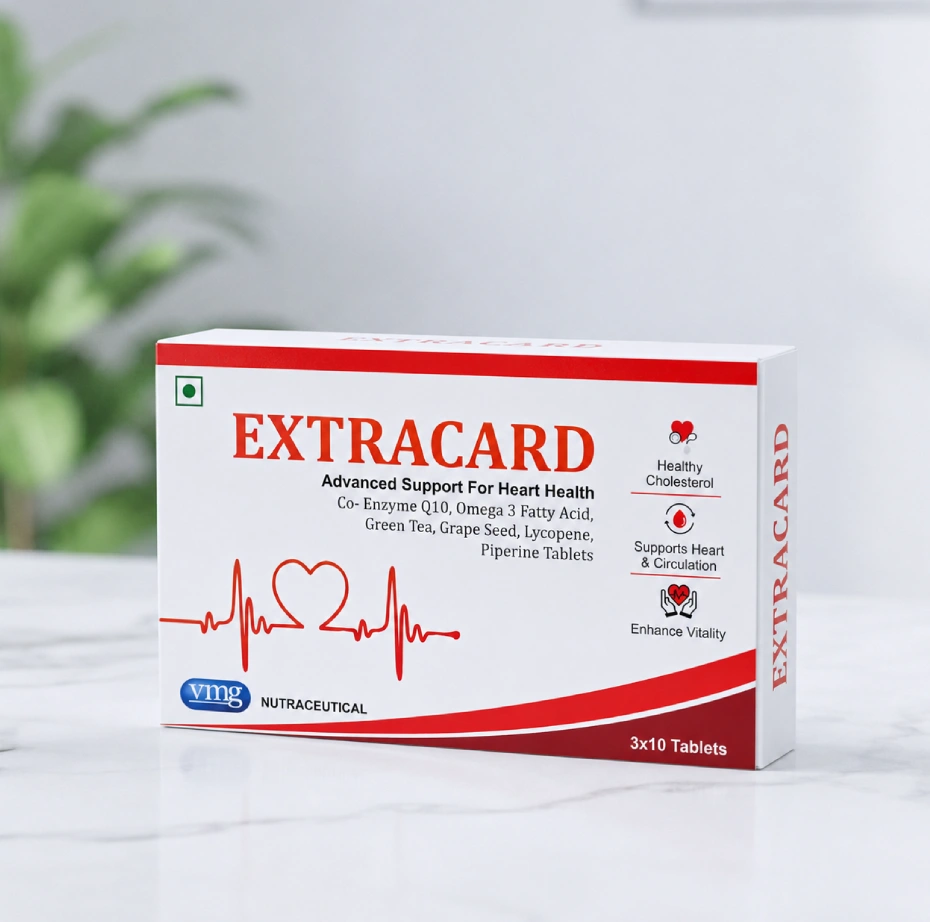
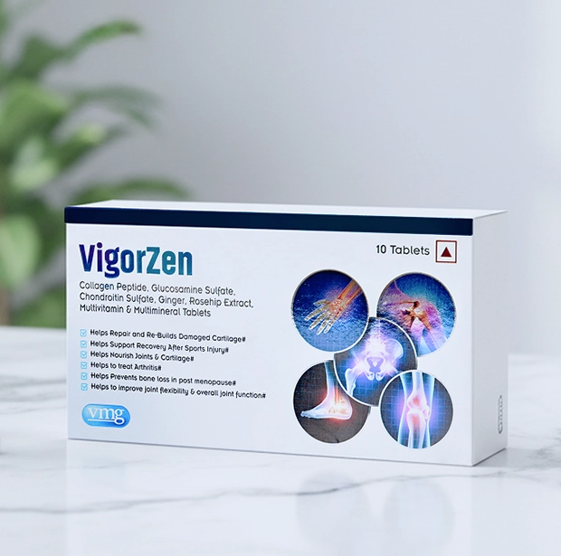

Research synthesis, information architecture, user flows, wireframes, high-fidelity UI, responsive design and component creation.
UI/UX CASE STUDY · E-COMMERCE · HEALTHCARE
Designing trust for a modern nutraceutical brand.
A responsive e-commerce experience for VMG Active that transforms pharmaceutical credibility into a clear, approachable and conversion-focused wellness journey.
Explore Case Study
01 · PROJECT OVERVIEW
Turning complex health information into confident decisions.
VMG Active is a nutraceutical brand backed by VMG Pharmaceuticals. The goal was to build an e-commerce platform that felt medically credible without looking cold, complex or overly clinical.
Worked with senior designers, developers and client stakeholders to refine the experience and prepare the interface for handoff.
THE CORE CHALLENGE
Health products are not impulse purchases. Users need proof, clarity and reassurance.
Is this product safe?
What exactly does it contain?
Why should I trust this brand?
Will it support my health goal?
02 · DESIGN PROCESS
A structured approach from research to responsive execution.
Understand
Studied the business, product portfolio, target users and the specific trust barriers present in nutraceutical e-commerce.
Define
Identified primary user goals, business objectives, information priorities and key purchase objections.
Design
Created user flows, page structures, wireframes, visual systems and responsive product experiences.
Refine
Iterated on hierarchy, content density, mobile usability and development feasibility with the wider team.
USER INSIGHT
People shop by health benefit, not by formulation name.
A user may not understand “Co-Enzyme Q10” immediately, but they do understand goals such as energy, heart health, mobility and recovery.
Trust must appear early
Pharmaceutical heritage, manufacturing standards and quality commitments were surfaced before users reached the checkout.
Benefits before jargon
Familiar outcomes were introduced before detailed ingredient and formulation information.
Progressive disclosure
Users could quickly scan the essentials and expand deeper information only when they needed reassurance.
Mobile clarity matters
Key benefits, pricing, pack selection and purchase actions were prioritised for smaller screens.
INFORMATION ARCHITECTURE
One experience for both quick shoppers and careful researchers.
Purchase-led journey
Homepage
→
Product Listing
→
Product Detail
→
Cart
Research-led journey
Blog
→
Health Topic
→
Relevant Product
→
Purchase
03 · THE SOLUTION
A clean interface balancing science, lifestyle and commerce.
Live visuals shown below are sourced from the published VMG Active website.
Homepage
Brand trust and product discovery in one journey.
The homepage introduces the scientific positioning, highlights bestsellers and uses educational content to support informed purchase decisions.
Product Listing
Fast comparison without information overload.



Product Detail
Answering objections before asking for conversion.
- Primary benefit and price first
- Clear pack selection
- Ingredient breakdown
- Usage and quality information
- FAQs and related products
DESIGN SYSTEM
Reusable components designed for consistency and scale.
Best Seller
1
Daily Wellness
Magnozin
₹1,299
Science-backed
Formulations created with quality and transparency.
Ingredients+
How to use+
FAQs+
RESPONSIVE DESIGN
Designed for discovery that often begins on mobile.
On smaller screens, the hierarchy prioritises product imagery, core benefits, pricing, pack selection and the main purchase action.
Large touch targets
Collapsible content
Clear product hierarchy
Visible purchase actions
Daily Wellness
Magnozin
Supports energy and everyday wellbeing.
₹1,299
WELLNESS GUIDE
Understanding daily magnesium needs
Simple educational content connected to product discovery.
04 · OUTCOME
A scalable digital foundation for VMG Active.
Communicated pharmaceutical-backed credibility.
Simplified complex product and ingredient information.
Created a benefit-led product discovery experience.
Built reusable patterns for future product expansion.
KEY LEARNING